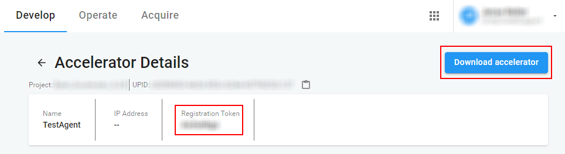

Unity Accelerator 是一种软件代理，可让您更快地共享 Unity Editor 的内容。您的团队在同一本地网络中工作时，Accelerator 会协调资源共享，因此您无需重新构建项目的某些部分。Accelerator 与 Unity Teams Advanced 配合使用时，还可共享源资源。这样可以显著减少从 Collaborate 服务下载所需的时间。
在本地网络中安装 Accelerator 后，Unity Editor（2019.3 版本或更高版本；请参阅下文的 Unity Editor 要求）与 Accelerator 进行通信以获取其他团队成员已更改或构建的资源。Accelerator 会在网络上保留这些资源的临时副本以避免浪费时间和带宽来获取或重建构建资源。
请在您团队经常使用的每个网络上都安装 Accelerator。您必须有计算机在本地网络上运行并且可以托管 Accelerator。选择主机时，应考虑以下要求：
Unity 项目必须使用 2019.3 版本或更高版本的 Unity 引擎。
Accelerator 与 Unity Teams Advanced 配合使用可带来更多益处：
如果您拥有 Unity Teams Advanced，则您组织的某个所有者或管理员可以按照以下步骤从开发者控制面板中创建 Accelerator：
1.从控制面板的 Develop 选项卡，选择需要创建 Accelerator 的项目。
2.在 Project 视图中，从左侧导航栏选择 Collaborate > Accelerator。
3.单击 New Accelerator 按钮。
4.在 New Accelerator 提示符处，输入一个代理名称以供 Unity 识别 Accelerator 代理。还可以（可选）指定端口号。
注意：当前限制是每个组织可有三个 Accelerator。
5.单击 Save 以确认您的设置。
6.在以下屏幕中，复制注册令牌 (Registration Token)，然后单击右上角的 Download Accelerator 按钮，并选择相应操作系统。

7.启动下载的安装程序，然后遵循安装向导进行操作。使用所复制的注册令牌，向 Unity Collaborate 注册 Accelerator。这样就可以使用 Accelerator 来增强 Collaborate 性能。
注意：如果将 Accelerator 安装在 Linux 系统上，请参阅验证 Accelerator 版本。
与 Unity Teams Advanced 配合使用时，每个 Accelerator 会收到自己的安全证书以证明有权访问您的组织。在 Accelerator 上传或下载任何内容之前，发出请求的 Unity Editor 使用 SSL/TLS 来安全连接到 Accelerator 并验证其真实性。Unity Editor 发现并连接到 Accelerator 时，Editor 不会传递普通的 Unity 用户令牌，而是从 Unity Identity 服务接收特殊令牌。这些令牌用于验证用户的身份并可以访问您组织内的单个项目，从而在使用 Accelerator 时保护任何其他组织和项目的访问权限。
资源导入管线提供了一个用于通过脚本访问项目资源的 API，并将 Accelerator 用作缓存机制。您或团队成员导入资源时，资源导入管线会首先检查资源是否已经以导入状态存在于 Accelerator 的存储库中。如果已存在，资源导入管线将跳过导入步骤，而改从 Accelerator 下载资源。如果不存在，资源导入管线将导入资源，然后将结果上传到 Accelerator。
将资源导入管线与 Accelerator 配合使用可显著减少大型项目的初始启动时间。该组合仅下载导入的结果并将结果存储在本地以供项目使用，而不进行资源密集型的导入操作。同一本地网络中的用户可以共享彼此的导入内容，从而减少多人进行繁重导入工作的需求。
如果您没有 Unity Teams Advanced，可以直接下载并安装 Unity Accelerator，并在安装过程中取消选中注册令牌：
注意：如果将 Accelerator 安装在 Linux 系统上，请参阅验证 Accelerator 版本。
在每个平台上，可以从命令行运行安装程序。如果使用参数 --help 来执行安装程序，它将显示各种可用选项。要在没有任何提示的情况下运行完整安装，您应该为以下项提供值：
--storagedir 设置 Accelerator 的目录以存储文件和配置。--registration-token 指定创建 Accelerator 后在开发者控制面板中提供的令牌。这是将 Accelerator 与 Collaborate 配合使用的必需条件。--mode unattended 来进行自动化安装，此类型的安装不应进行任何查询。这将使用默认值或提供的其他选项标志的值。Contents/MacOS/installbuilder.sh）。安装 Accelerator 时，安装向导的最后一步按以下格式显示 Editor 中引用的 IP 地址和端口：
[IP]:[Port]
要配置您的 Editor 来将该 Accelerator 用作资源管线版本 2 缓存服务器，请遵循以下步骤进行操作：
1.在 Unity Editor 中，选择 Edit > Preferences (Windows) 或 Unity > Preferences(Mac OS X)。 2.从左侧菜单中选择 Cache Server。 3.启用 Asset pipeline v2，然后在 Default IP address 字段中输入来自安装向导的 Accelerator IP 地址。
或者，在启动 Unity Editor 时，您可以使用命令行参数来提供 Accelerator 缓存服务器配置详细信息。
要指定希望使用 Accelerator 缓存服务器，请使用 -EnableCacheServer 参数，而要指定地址和端口号，请使用 -cacheServerEndpoint Address:Port，并将 Address 和 Port 替换为缓存服务器的相应详细信息。
注意：Accelerator 缓存服务器要求您的项目使用资源数据库 V2 (ADB2)。从命令行启动 Unity 时，可以使用 -adb2 参数来强制升级到 ADB2。
请参阅命令行参数以了解更多信息。
如果您是 Unity Teams Advanced 用户，可以从开发者控制面板监测 Accelerator 指标。这些指标仅适用于源资源，不适用于生成（导入）的资源。
要查看项目的 Accelerator 汇总，请选择该项目，然后从左侧导航栏中选择 Collaborate > Accelerators。在此菜单中，可查看以下信息：
| 属性 | 描述 |
|---|---|
| 名称 | 创建 Accelerator 时提供的名称。 |
| Avg.Efficiency | 过去 24 小时内，Accelerator 的平均效率。 |
| Editors | 连接到 Accelerator 的 Unity Editor 数量。 |
| Latest Activity | Accelerator 的最近使用情况。 |
| Status | Accelerator 可能处于以下状态之一： - Available 表示未安装 Accelerator 或未向 Collaborate 服务注册 Accelerator。 - Ready 表示 Accelerator 已向 Collaborate 服务注册，但未连接 Unity Editor。 - In use 表示已连接 Unity Editor，或 Unity Editor 最近已连接到 Accelerator。 - Idle 表示 Unity Editor 以前使用过 Accelerator，但是最近没有活动。 - Not Listening 表示 Accelerator 无法连接到已配置的端口（很可能是因为其他服务已在使用该端口）。 - Disconnected 表示 Accelerator 不再连接到相应服务来报告使用情况，也不再接收配置更改。 |
| Enabled | 指示 Unity Editor 是否可以发现并尝试使用 Accelerator。不管已禁用的 Accelerator 是否正在运行，Unity Editor 都不会使用这些 Accelerator。 |
单击 Accelerator 的 Details 可查看有关其使用情况的以下深入信息。这些数据每 10 分钟更新一次。
此处显示 Accelerator 在过去 24 小时内的平均性能。值的范围是 0 到 100，用于衡量从 Accelerator 本地（而不是从 Collaborate 服务远程）提供的内容下载所占的百分比。值为 0 表示 Accelerator 无助于内容下载。值为 100 表示 Accelerator 提供了所有内容下载。
Accelerator 会定期清理空间以存储新资源。Accelerator 清理空间时，控制面板会报告分配给旧资源并且已被 Accelerator 从本地存储中删除的字节数。
注意：这是正常操作，有助于维持 Accelerator 的健康状态。但是，如果此值似乎对 Accelerator 的效率产生了不利影响，您可能需要添加更多存储空间来适应团队的使用需求。理想情况下，运行 Accelerator 的文件系统应使用具有足够可用磁盘空间的固态硬盘驱动器来容纳最新版激活项目中的所有文件，但这不是硬性要求。如果没有足够的存储空间，Accelerator 的整体效率将下降。
分布式团队可能有使用 Accelerator 的本地参与者，也有使用 Collaborate 服务的远程参与者。在这些情况下，Accelerator 会监听远程发布事件，并主动为其本地网络上的用户下载受影响的内容。
Accelerator 在使用过程中会报告从远程 Collaborate 服务请求和下载的字节总数，而不是从本地网络传输的字节总数。在本地传输更多字节会更有利于您的团队，因为这样可以减轻网络网关的负担。
Accelerator 在传输本地存储的资源（而不是从 Collaborate 服务下载资源）时会跟踪带宽，并将 Unity Editor 等待远程下载资源的时间差报告为节省的时间。
注意：前述指标仅适用于源资源。这些指标不适用于生成（导入）的资源。
如果您没有使用 Unity Teams Advanced，每个 Accelerator 将以 /metrics 的形式托管 Prometheus 指标报告，您可以从本地网络查询此数据。以下是您可以访问的指标的完整列表：
| 指标 | 描述 |
|---|---|
process_resident_memory_bytes |
Accelerator 使用的内存量。 |
uta_agent_sys_cpu_percent |
系统使用的 CPU 量。 |
uta_agent_sys_mem_bytes_used |
系统使用的内存量。 |
uta_agent_protobuf_connects |
Unity Editor 连接到资源导入管线的服务的次数。 |
uta_agent_protobuf_bytes_in |
从资源导入管线接收到的字节数。 |
uta_agent_protobuf_bytes_out |
发送到资源导入管线的字节数。 |
uta_agent_protobuf_requests{code="0",method="get"} |
发送到资源导入管线的项数。 |
uta_agent_protobuf_requests{code="1",method="get"} |
发送到资源导入管线的项中发生的错误数。 |
uta_agent_protobuf_requests{code="2",method="get"} |
发送到资源导入管线的项中发生的命名空间错误数。 |
uta_agent_protobuf_requests{code="3",method="get"} |
资源导入管线针对尚未缓存的项提出的请求数。 |
uta_agent_protobuf_requests{code="0",method="put"} |
从资源导入管线接收到的项数。 |
uta_agent_protobuf_requests{code="1",method="put"} |
从资源导入管线接收的项中发生的错误数。 |
uta_agent_protobuf_requests{code="2",method="put"} |
从资源导入管线接收的项中发生的命名空间错误数。 |
uta_agent_protobuf_requests{code="0",method="delete"} |
从资源导入管线提出的关于删除项的请求数。 |
uta_agent_protobuf_requests{code="1",method="delete"} |
资源导入管线删除项时发生的错误数。 |
uta_agent_protobuf_requests{code="2",method="delete"} |
资源导入管线提出的删除项请求中发生的命名空间错误数。 |
uta_agent_protobuf_requests{code="3",method="delete"} |
资源导入管线针对尚未缓存的项提出的删除项请求数。 |
uta_agent_protobuf_cache_hits |
从缓存满足的资源导入管线请求数。 |
uta_agent_protobuf_cache_misses |
无法从缓存满足的资源导入管线请求数。 |
uta_agent_protobuf_cache_bytes_out |
从缓存提供给资源导入管线的字节数。 |
uta_agent_protobuf_cache_bytes_in |
从资源导入管线接收而存储到缓存中的字节数。 |
Unity Editor 日志可用于查看调试信息。要查看 Collaborate 事件的日志，请在环境变量设置为 enableCollabEventLogs=true 的情况下运行 Unity Editor（或 Unity Hub）。具有 [collab-accelerator] 标记的日志会有助于深入了解 Accelerator 的性能。
以下代码块显示了使用资源导入管线 v2 的 Accelerator 的日志输出示例。这无需 enableCollabEventLogs=true，因为它不用于 Collaborate。
2019-10-07T11:34:51-0700 Using Asset Import Pipeline V2.
...
2019-08-08T09:04:03-0700 Start importing Assets/Scenes/tame-the-unicorn.png guid(07a0d449dcaef4d2ba104e9d9b350de6)
2019-08-08T09:04:05-0700 Done importing asset: 'Assets/Scenes/tame-the-unicorn.png' (target hash: 'd5fddd470dd9beedcd7261b6455e436a') in 1.082988 seconds
2019-08-08T09:04:05-0700 RemoteAssetCache::AddArtifactToCacheServer - artifactKey='Guid(07a0d449dcaef4d2ba104e9d9b350de6) Importer(-1,)' Target hash='d5fddd470dd9beedcd7261b6455e436a'
Accelerator 作为每个平台的后台进程运行。
在“设置”菜单中搜索“服务”一词或者在运行对话框 (WIN + R) 中运行“services.msc”来打开服务面板。下一步，在生成的列表中找到“Unity Accelerator”服务。左面板中会显示停止服务或重新启动服务选项。
在终端中运行 launchctl 命令以便从 LaunchControl 实用程序控制“com.unity.accelerator”服务。有关更多信息，请访问 https://www.launchd.info/。
使用 service 控制台实用程序来控制“unity-accelerator”服务。有关更多信息，请访问 http://manpages.ubuntu.com/manpages/bionic/man8/service.8.html。
Accelerator 服务会在维护期间自动自我更新。当前，该维护期根据运行 Accelerator 的计算机而设置为当地时间凌晨 01:00–02:00。仅当 Accelerator 发现可用的更新版本时，才会进行自我更新。
Accelerator 的安装日志和卸载日志保存在操作系统的标准临时目录中，名为 unity-accelerator-*install.log。Accelerator 的日志保存在存储目录中，名为 unity-accelerator.log。
如果您已经安装 Accelerator，但是某些 Unity Editor 无法使用它，则可能有多种原因导致出现此问题。以下故障排除选项可能有助于解决此问题：
每个项目参与者都必须使用 Editor 版本 2019.3 或更高版本才能使用 Accelerator。
确保 Accelerator 与遇到问题的项目参与者在同一局域网中运行。Accelerator 对远程工作的参与者无效。
检查遇到问题的计算机是否可以访问 Accelerator。如果使用 Unity Teams Advanced，请按照以下步骤在浏览器中访问 Accelerator 的运行状况页面：
1.在开发者控制面板中，选择 Collaborate > Accelerator。 2.单击您要检测的 Accelerator 的 Details。 3.单击 Accelerator IP 地址旁的信息图标以显示其运行状况页面的 URL。
如果没有使用 Unity Teams Advanced，请将 Accelerator 的主机 IP 地址输入到以下 URL 路径中以显示其运行状况页面：
[AcceleratorIP]:[AcceleratorPort]/api/agent-health
如果测试未通过，请确保所有主机和网络防火墙都允许访问 Accelerator 的监听 IP 地址和端口 (TCP)。您可能需要与网络管理员协调以允许访问此端口。
如果使用 Unity Teams Advanced，请验证是否为相关项目配置了 Accelerator。在开发者控制面板中导航到此项目，然后从左侧导航栏中选择 Collaborate > Accelerator。您应该会看到为该项目列出了 Accelerator。
对于 Linux 系统上安装的 Accelerator，所有 Linux 可执行文件均具有签名文件，您可以对这些文件进行验证以确保没有恶意实体篡改了您下载的 Accelerator 版本。您可以使用受信任的 GnuPG 版本来验证签名文件。以下密钥为最新版本签名。包含密钥的公钥块位于 https://collab-accelerator.cloud.unity3d.com/ 中。
pub rsa4096 2019-12-02
Key fingerprint = 9BC4 B04D F2E8 74E5 64AA 47E7 6D44 3B8B 002C F61F
uid Unity Technologies ApS (Accelerator signing key) <sst-ops@unity3d.com>
要将密钥下载到您的 GPG 存储库，请使用以下命令之一：
$ gpg --keyserver https://collab-accelerator.cloud.unity3d.com/ --search-key "sst-ops@unity3d.com"
$ gpg --keyserver https://collab-accelerator.cloud.unity3d.com/ --recv-key 9BC4B04DF2E874E564AA47E76D443B8B002CF62F
要检查您安装的 Accelerator 版本是不是原始版本且未经修改，请验证该文件的签名。
Accelerator 安装文件随附了 https://storage.googleapis.com/unity-accelerator-prd/unity-accelerator-installer.sig 中提供的签名文件。使用此签名文件可以验证 Accelerator 安装程序：
$ gpg --verify unity-accelerator-installer.sig unity-accelerator-linux-x64-installer.run
在信任密钥之前，请将指纹与伪造或不受信任的密钥中显示的指纹进行对比。 信任密钥后，您将看到如下内容：
gpg: Signature made Thu Jan 16 12:29:14 2020 PST
gpg: using RSA key 9BC4B04DF2E874E564AA47E76D443B8B002CF61F
gpg: Good signature from "Unity Technologies ApS (Accelerator signing key) <sst-ops@unity3d.com>" [ultimate]
这意味着签名有效，并且您已信任此密钥。
如果没有正确的分发密钥，以上命令的输出将如下所示：
gpg: Signature made Thu Jan 16 12:29:14 2020 PST
gpg: using RSA key 9BC4B04DF2E874E564AA47E76D443B8B002CF61F
gpg: Can't check signature: No public key
在此情况下，您必须按照上文中的说明来获取密钥。
如果您有包含有效签名的密钥副本，但是该密钥未被标记为受信任或该密钥是伪造的，则输出将如下所示：
gpg: Signature made Thu Jan 16 12:29:14 2020 PST
gpg: using RSA key 9BC4B04DF2E874E564AA47E76D443B8B002CF61F
gpg: Good signature from "Unity Technologies ApS (Accelerator signing key) <sst-ops@unity3d.com>" [unknown]
gpg: WARNING: This key is not certified with a trusted signature!
gpg: There is no indication that the signature belongs to the owner.
Primary key fingerprint: 9BC4 B04D F2E8 74E5 64AA 47E7 6D44 3B8B 002C F61F
如果密钥是伪造的，则必须使用签名文件来验证指纹。 如果密钥未被标记为受信任，请编辑密钥，将其标记为受信任。有关更多信息，请参阅 https://www.gnupg.org/gph/en/manual/x334.html。
有关 Accelerator 与 Unity Teams 配合使用的帮助信息，请向支持服务部门发送电子邮件，或者从开发者控制面板中提交支持工单。要为 Unity Teams Advanced 项目提交支持工单，请选择项目，然后从左侧导航栏中选择 Collaborate > Support。
有关 Accelerator 与资源导入管线配合使用的帮助信息，请访问 Accelerator 论坛。